品悟商客大道，领略文人风华
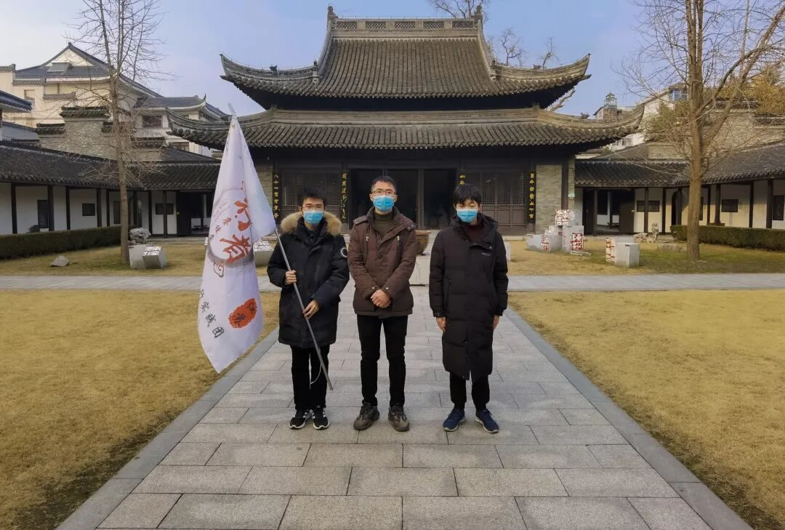
行者无疆·赓续前行
领略文人风华
品悟商客大道
妙语连珠，一字一句尽是感触；
春风化雨，一言一行皆是修行。
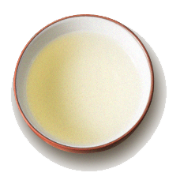
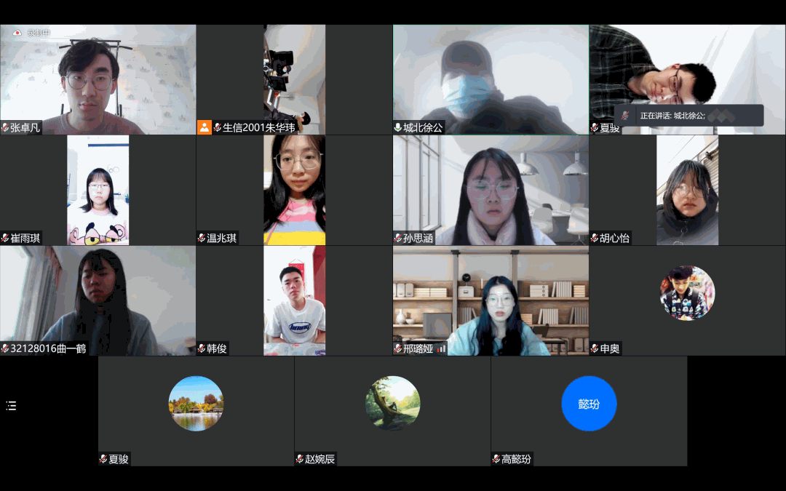
今天是实践进行的第三天，行者们有幸请到了扬州化水环境工程科技有限公司的徐少华董事长以及扬州八怪纪念馆的倪越主任。
两场发自内心的交谈过去，我们被两位长辈开阔的眼界所折服，也让我们对扬州又有了更深一层的理解。
世事纷杂，行之有道
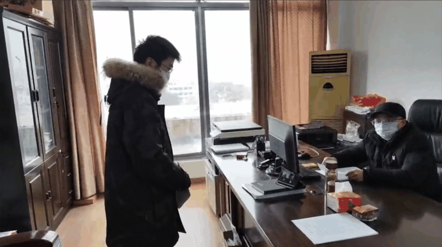
我们首先采访了扬州化水环境工程科技有限公司的徐少华董事长，面对我们的提问，徐董事长旁征博引，从多方面完整有序地阐述着自己的观点。
谈到环境问题，徐董事长从自身出发，以自身企业为例，告诉我们要积极响应国家号召，坚持贯彻绿水青山就是金山银山的宝贵理念，在自己的领域里做到精益求精，在规则内办事。言辞恳切，令人钦佩。
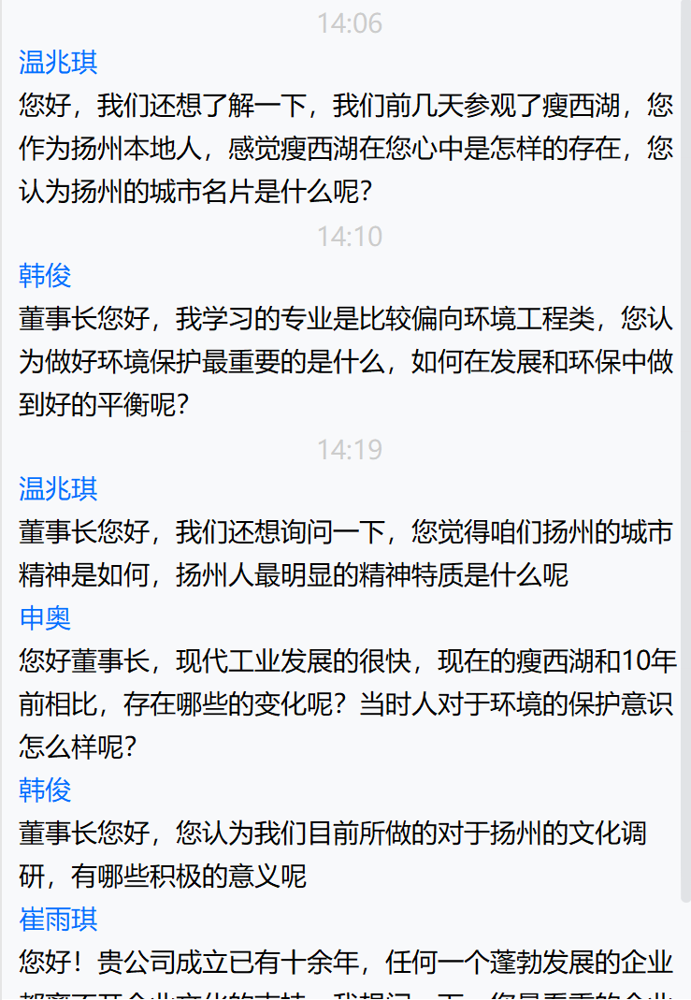
交谈的最后，徐董事长立足社会变化与时代更迭寄语新时代大学生，告诫我们要勇于追求自己的理想，根据自己的兴趣来决定人生的发展方向。在仰望星空的同时，也别忘了时时看脚下。
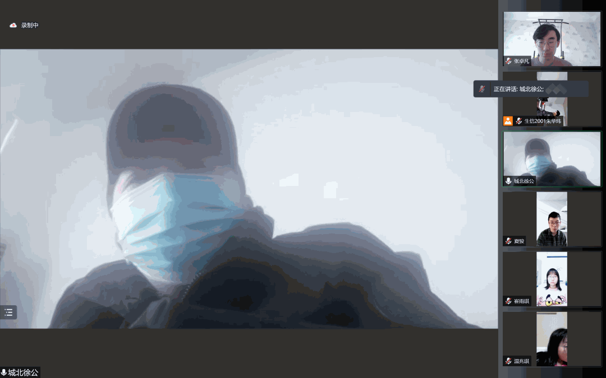
尽管时间有限，但我们还是能够从徐董事长的一言一语中体会到他为人处世的智慧，朴素而闪闪发光的精神品质。
以心立世，醇厚沉穆
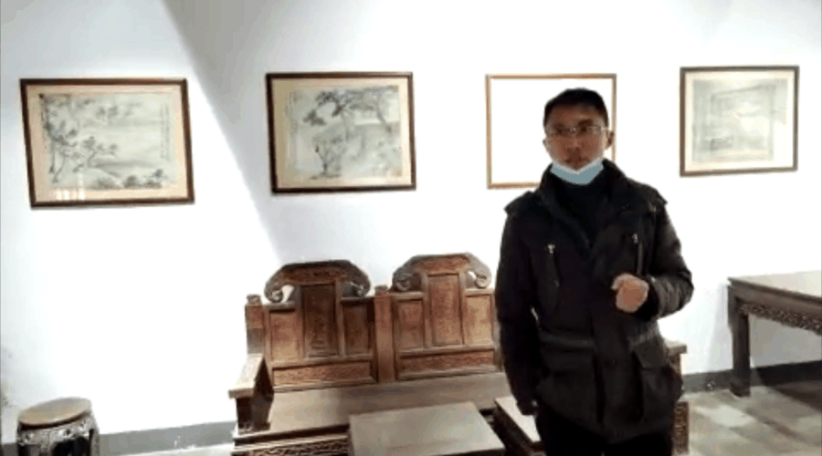
倪越主任
“观金宝年历恰如丝丝春雨滋润心田，那骨子里透出的文气雅气，那是浸淫在二千五百年历史的古城扬州所展现的活化石，令人爱不择手。”扬州文化名人马家鼎这样评赞倪越主任。
有匪君子，如切如磋，如琢如磨。倪主任就是君子，他从江南烟雨中走来，只为让我们领略文化的力量。
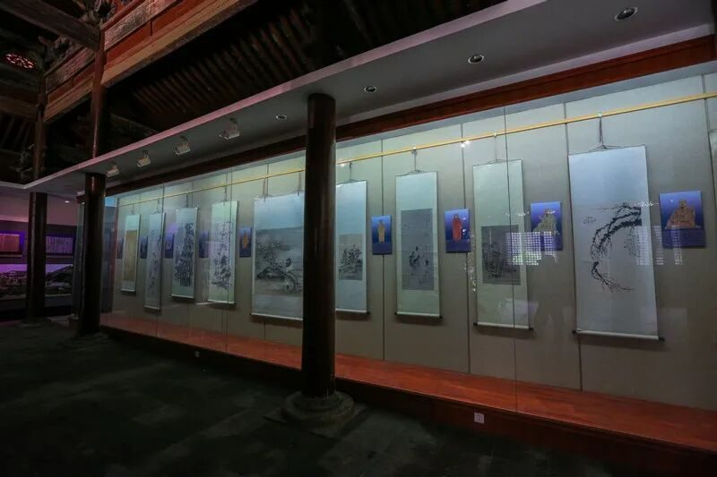
行者们跟随着倪主任的脚步走近八怪，走近扬州，一品文化古城穿越千年的荡气回肠。
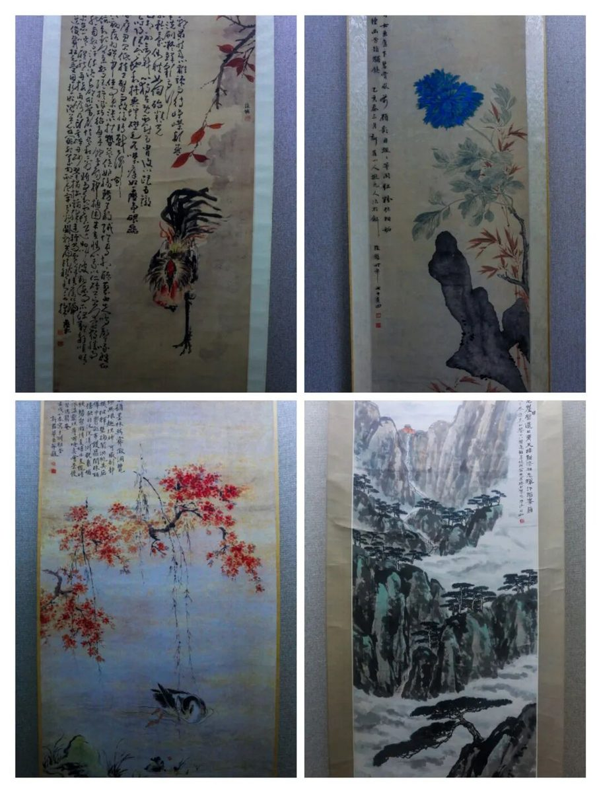
上善若水，倪主任的品性便如一汪活水，使人平静，给人以力量。
除却扬州八怪纪念馆主任这一身份，倪主任更是一位全能型书画家。
交流的过程中，倪主任在为我们讲解各种文化知识的同时，还亲手为我们题了字。
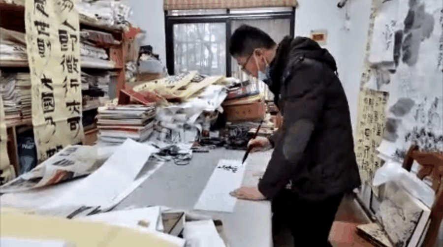
看着倪主任提笔挥墨的背影，我们不禁被他的文雅气质所感染，更被他的平易近人感动不已。
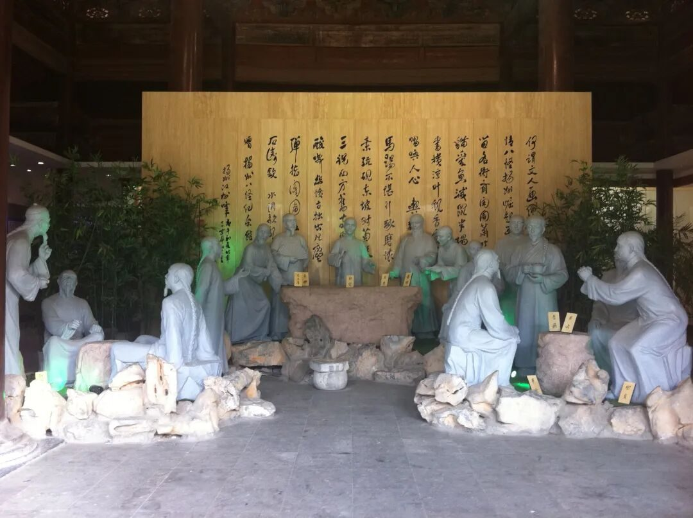
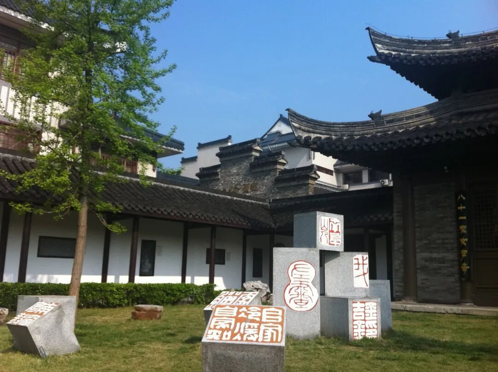
一方水土养一方人，在倪主任的身上，我们看到的是扬州城的气质。
文化对于人来说是一种滋养，我们将文化内化于心，铸造道德涵养，外现于形的便是个人独特的气质。
以文化修养为基石，顺应天性，发挥天性，才能找到合适的道路。
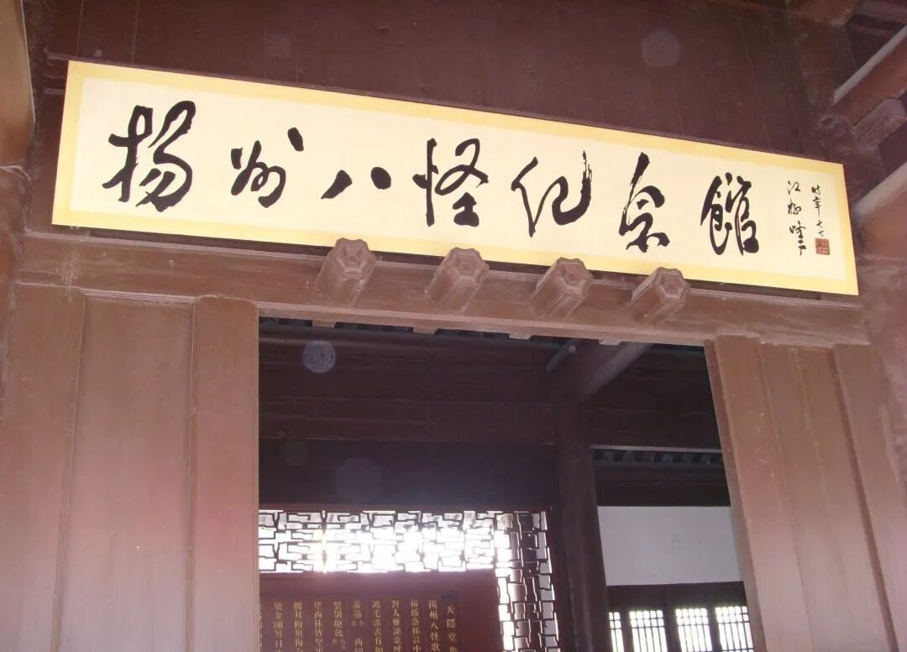
在今天的实践活动中，
我们沉浸在文化美妙的氛围里。
当滚烫而又炽热的喜爱
邂逅水墨画一般的扬州文化，
碰撞出一往无前的汹涌力量，
这便是根植于每一名行者内心深处的不竭动力。
来源 | 行者无疆实践团
文字 | 孙思涵
排版 | 崔雨琪
审核 | 温兆琪 朱华玮